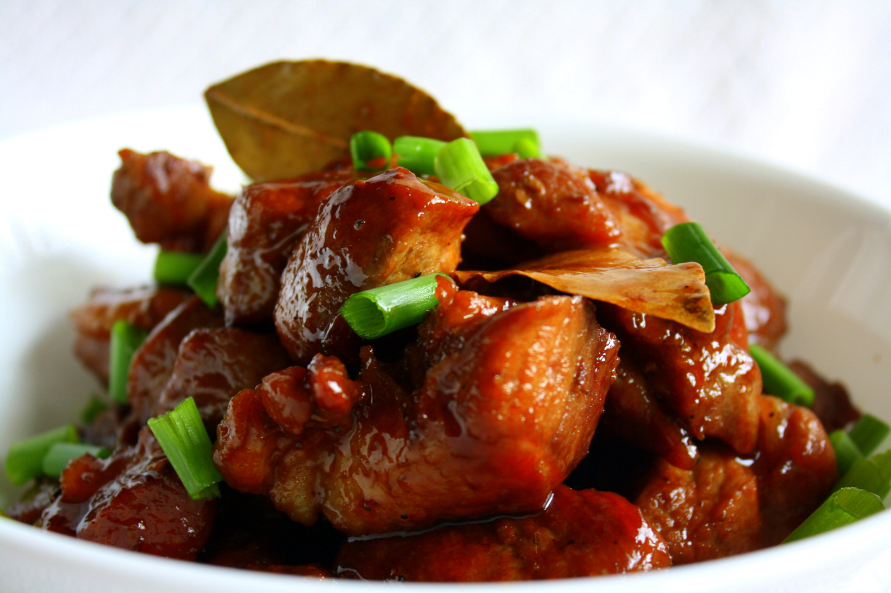

Chicken Adobo
Chicken Adobo is a famous Filipino dish. It is cooked with soy sauce, vinegar,
garlic, and spices. It is easy to make and very delicious.
Ingredients
- Chicken
- Soy sauce
- Vinegar
- Garlic
- Bay leaves
- Pepper
Method
- Heat oil in a pan.
- Cook the garlic.
- Add the chicken and cook.
- Add soy sauce and vinegar.
- Add bay leaves and pepper.
- Simmer until the chicken is cooked.
- Serve with rice.